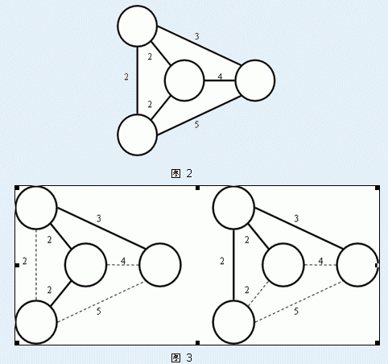

Secsa 最近对最小生成树问题特别感兴趣。他已经知道如果要去求出一个 $n$ 个点、$m$ 条边的无向图的最小生成树有一个 Krustal 算法和另一个 Prim 的算法。另外，他还知道，某一个图可能有多种不同的最小生成树。例如，下面图 $3$ 中所示的都是图 $2$ 中的无向图的最小生成树：

当然啦，这些都不是今天需要你解决的问题。Secsa 想知道对于某一条无向图中的边 $AB$，至少需要多少代价可以保证 $AB$ 边在这个无向图的最小生成树中。为了使得 $AB$ 边一定在最小生成树中，你可以对这个无向图进行操作，一次单独的操作是指：先选择一条图中的边 $P_1P_2$，再把图中除了这条边以外的边，每一条的权值都减少 $1$。如图 $4$ 所示就是一次这样的操作：
输入的第一行有 $3$ 个正整数 $n$、$m$、$Lab$ 分别表示无向图中的点数、边数、必须要在最小生成树中出现的 $AB$ 边的标号。
接下来 $m$ 行依次描述标号为 $1,2,3…m$ 的无向边，每行描述一条边。每个描述包含 $3$ 个整数 $x$、$y$、$d$，表示这条边连接着标号为 $x$、$y$ 的点，且这条边的权值为 $d$。
输入保证 $1 \le x,y \le N$，$x \ne y$，且输入数据保证这个无向图一定是一个连通图。
输出只有一行，这行只有一个整数，即，使得标号为 $Lab$ 边一定出现最小生成树中的最少操作次数。
4 6 1 1 2 2 1 3 2 1 4 3 2 3 2 2 4 4 3 4 5
1
$1 \le n \le 500,1 \le M \le 800$，$1 \le D<10^6$
 Comet OJ
Comet OJ